Live streaming activation
To activate live streaming, YouTube requires:
- to verify your phone number
- to Request access to streaming
How to verify phone number
On desktop go to YouTube, click your profile icon in the top right corner.
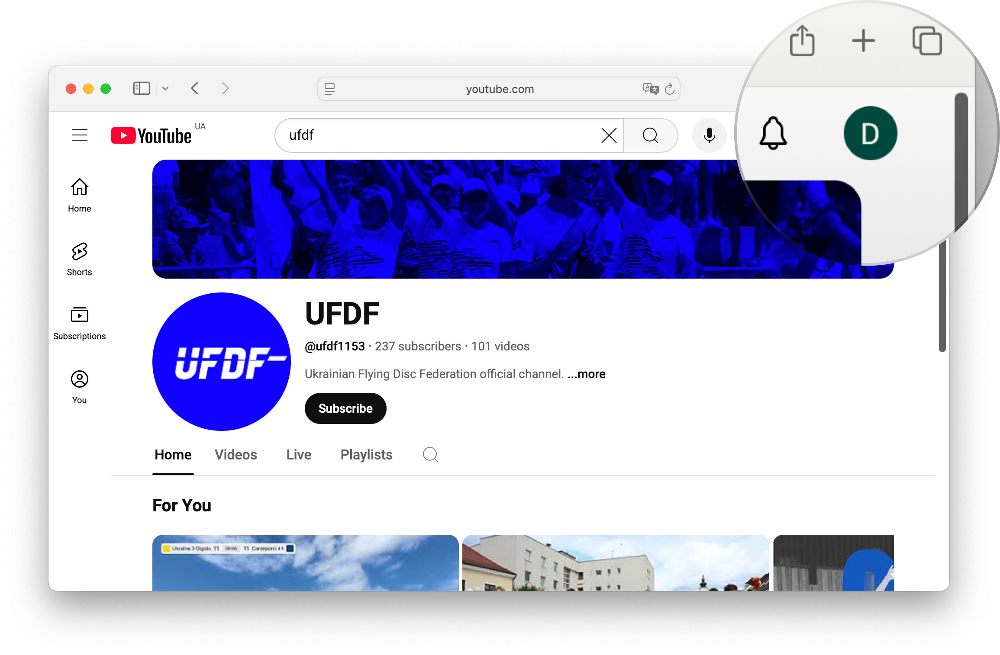
Select YouTube Studio.
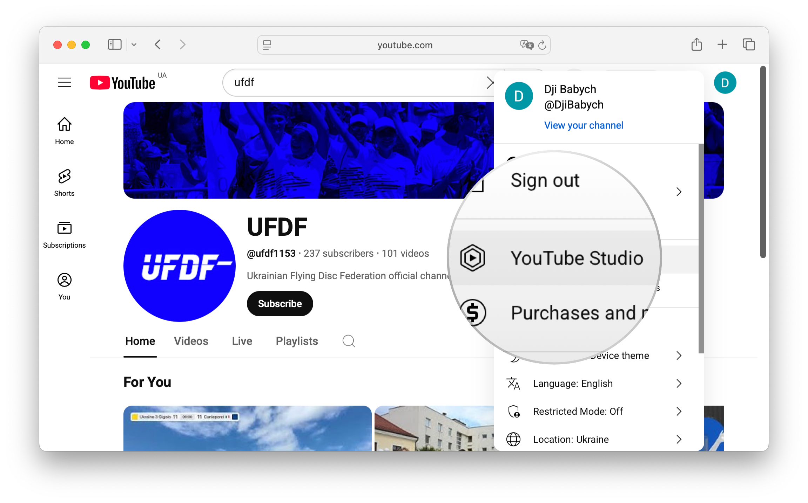
Click Settings in the bottom left corner.
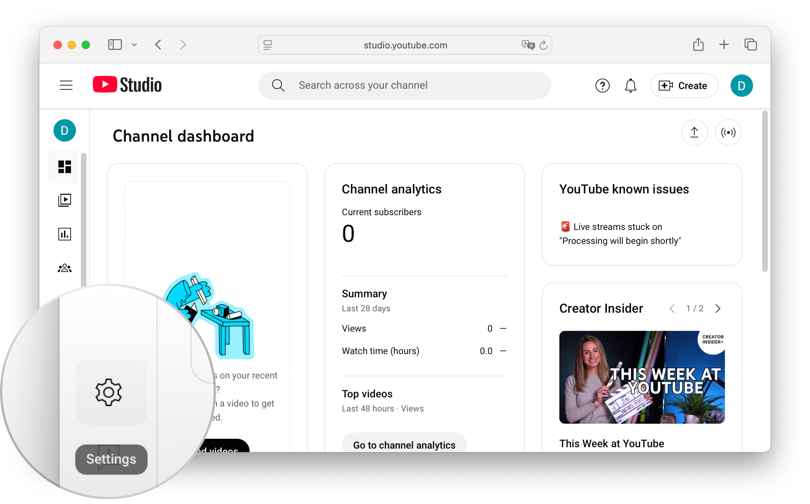
Navigate to the Channel option.
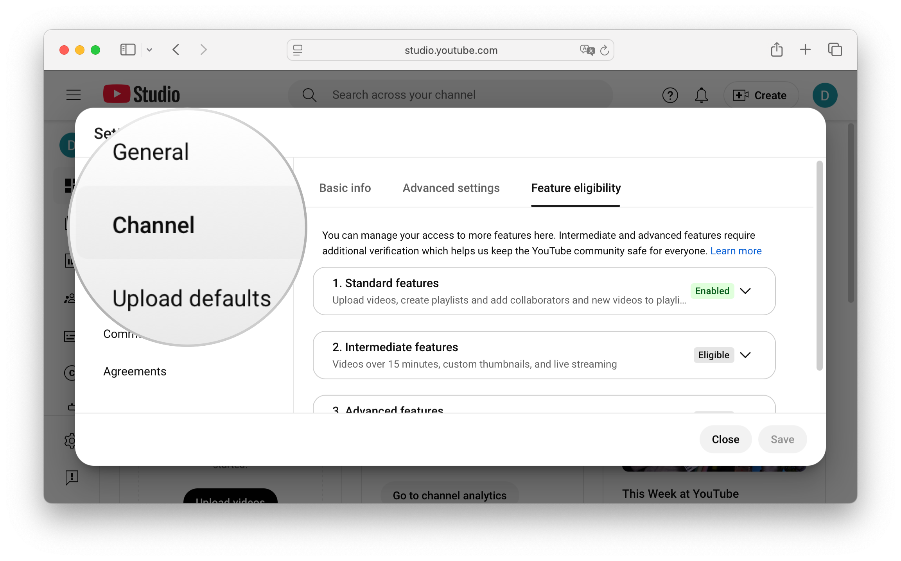
Select the tab Feature eligibility.
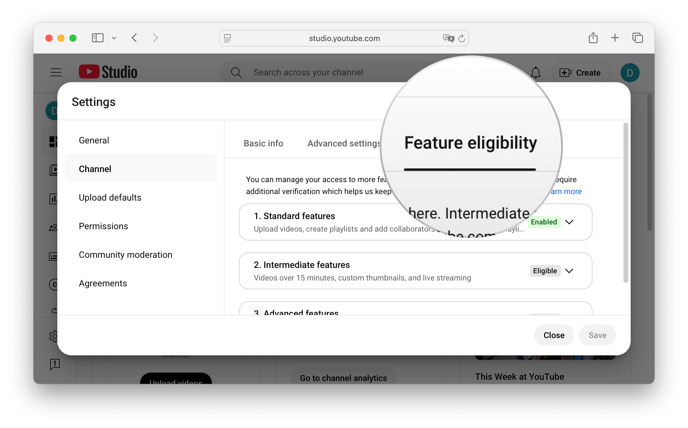
Expand Intermediate features.
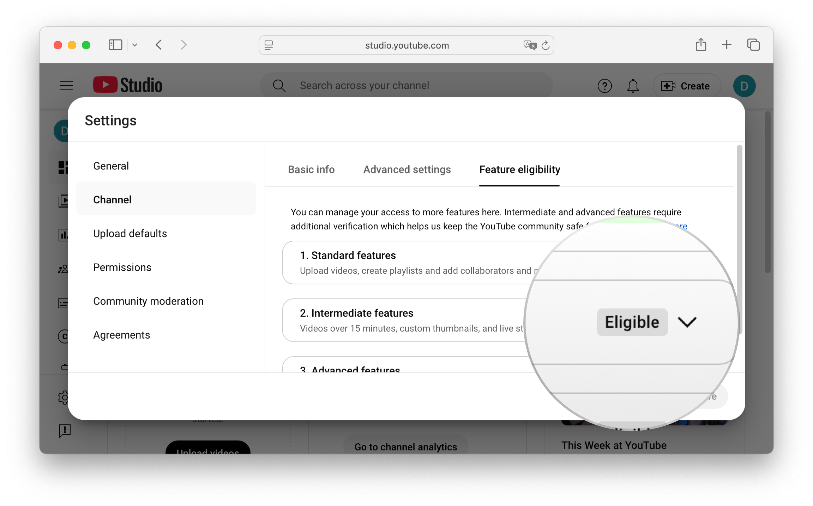
Click Verify phone number.
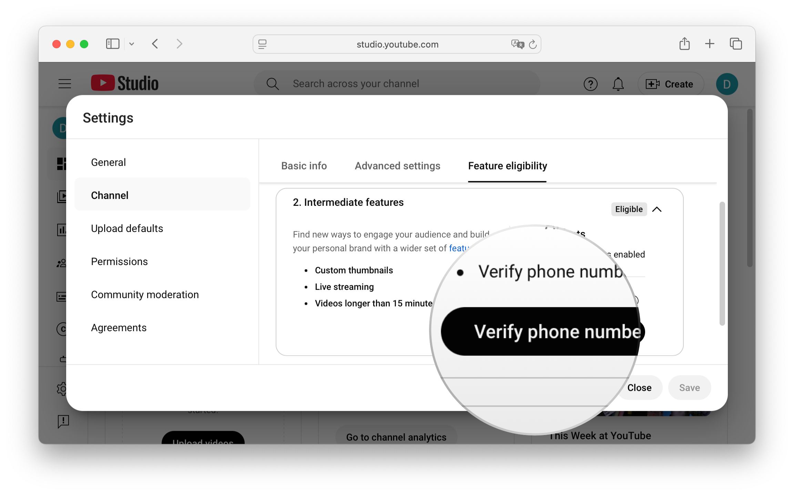
Proceed with Phone number verification.
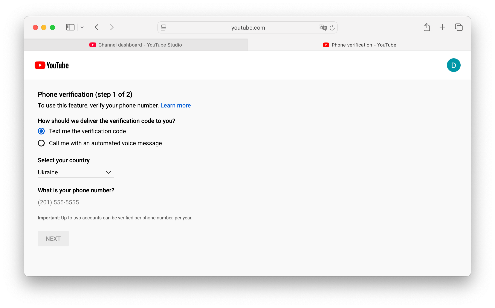
How to request access to streaming
From your YouTube channel's homepage, click Create.
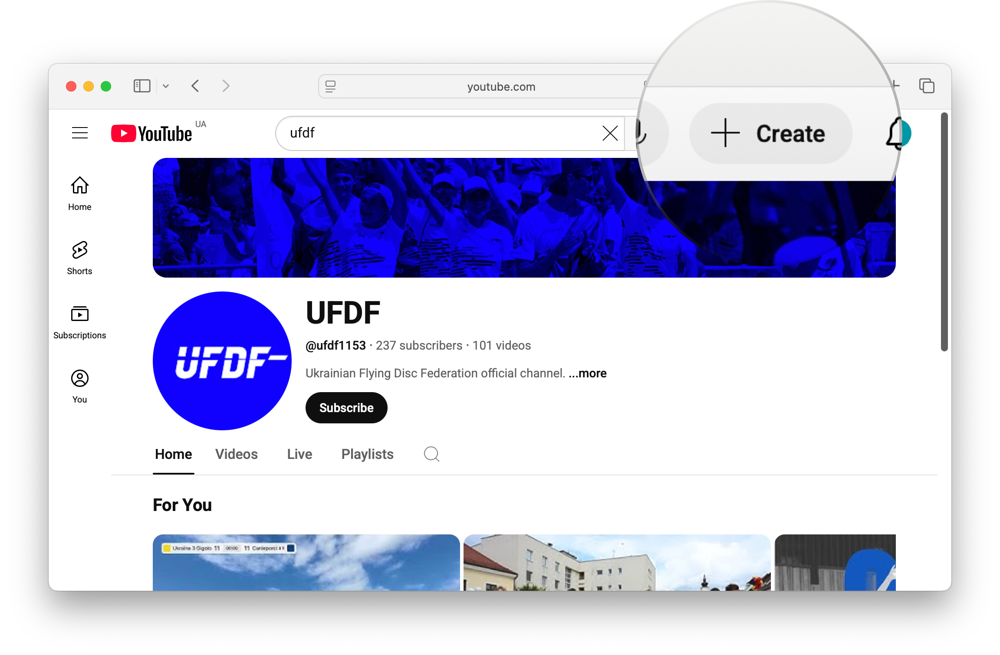
Select Go Live.
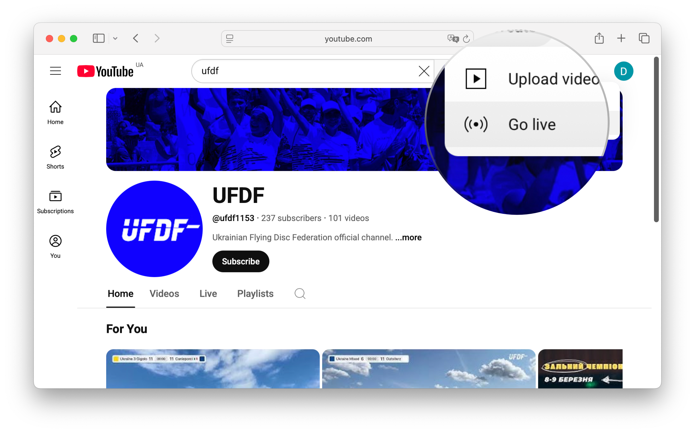
On the opened YouTube Studio screen click Request. Wait 24 hours to host your first stream.
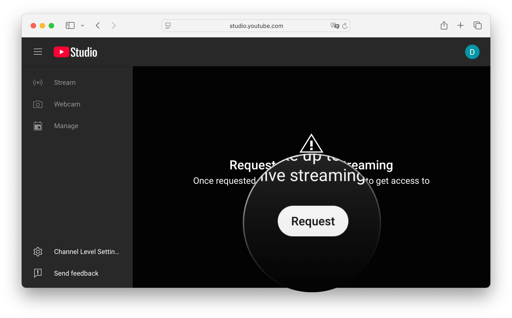
Once your YouTube channel is enabled for live streaming, you can easily start a sports live stream from your iPhone in just a few minutes using the Ultimate Streamer app.